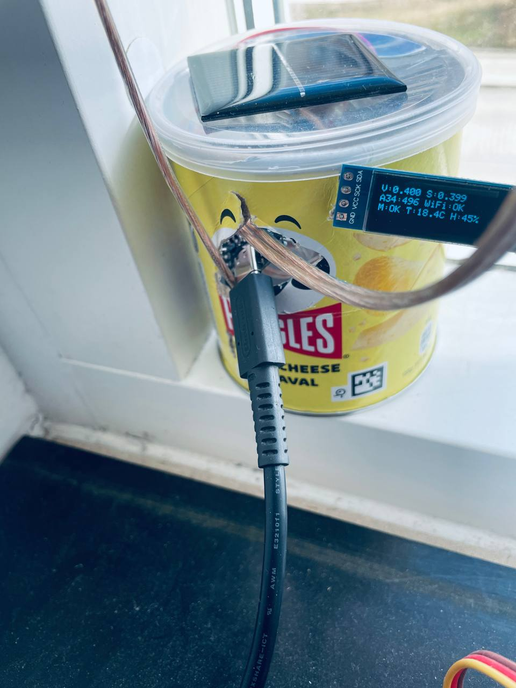

Prediction stack
KNN + Random ForestTemperature forecasting runs on a simplified KNNRegressor, while sunrise and sunset timing are estimated through a RandomForestRegressor.
I built a meteorological station with temperature prediction powered by a heavily simplified KNN regressor and sun-time estimation powered by a RandomForestRegressor.
Back to archive Open GitHub repo
Prediction stack
KNN + Random ForestTemperature forecasting runs on a simplified KNNRegressor, while sunrise and sunset timing are estimated through a RandomForestRegressor.
Hardware move
Raspberry Pi to ESP32The migration kept the project useful while making the station much more compact and practical for daily use.
Live node
weather.datanode.liveYou can watch the station working on weather.datanode.live.
What it tracks
Light, temperature, humidityThe station reads local conditions, predicts temperature, and estimates the daily sun cycle from the data it collects.
